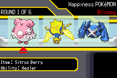
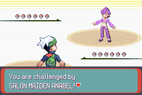
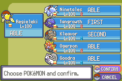
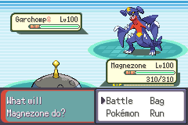
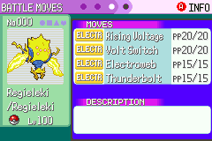
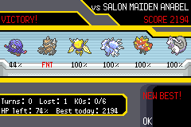

Play in your browser
You need your own copy of Pokémon Emerald (USA/Europe) as a .gba file. It's patched right here in your browser and never uploaded anywhere. Your save stays in this browser.
Controls
On a phone, use the on-screen buttons. On a keyboard: arrows to move, Z is A, X is B, Enter is Start, V is Select, Q and E are L and R. Use the gear icon under the game to change them, or plug in a controller.
Play on an emulator
- Download daily-pokemon-battle.bps.
- Patch your own Pokémon Emerald (USA/Europe) file with it. The easiest way is Rom Patcher JS, which works on phones too. On PC you can also use Flips.
- Open the patched file in an emulator with real-time clock support: mGBA on Windows, Mac or Linux, Pizza Boy GBA or My Boy! on Android, Delta on iPhone.
Base file check: CRC32 1F1C08FB, SHA-1 f3ae088181bf583e55daf962a92bb46f4f1d07b7. The new day starts at midnight on your device's clock.